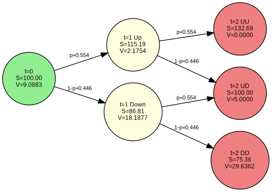

4 Binomial Trees{#sec-c:trees}
This chapter introduces binomial tree models for valuing derivative securities. We begin with the fundamental concepts of arbitrage pricing in a one-period model, extend to multi-period trees, and then discuss practical implementation and parameter calibration.
4.1 One-Period Binomial Model
We start with the simplest possible model. A stock has price \(S\) today (date 0) and will have one of two possible values at date \(t\): either \(S_u\) (up state) or \(S_d\) (down state), where \(S_u > S_d\). There is also a risk-free asset earning a continuously compounded rate \(r\).
Delta Hedging and Replication
Consider a European call option with strike \(K\) and maturity \(t\). Its payoff will be \(C_u = \max(0, S_u - K)\) in the up state and \(C_d = \max(0, S_d - K)\) in the down state.
The key insight is that we can replicate the option payoff using a portfolio of the stock and risk-free asset. Let \(\delta\) be the number of shares we hold. This delta is chosen so that the portfolio has the same payoff as the option in both states:
\[\delta = \frac{C_u - C_d}{S_u - S_d}\]
To see why this works, consider a portfolio that holds \(\delta\) shares of stock and borrows an amount \(B\) at the risk-free rate. The portfolio value at maturity will be: - Up state: \(\delta S_u - B e^{rt}\) - Down state: \(\delta S_d - B e^{rt}\)
For replication, we need these to equal the option payoffs: \[\delta S_u - B e^{rt} = C_u\] \[\delta S_d - B e^{rt} = C_d\]
Subtracting the second equation from the first: \[\delta(S_u - S_d) = C_u - C_d\]
This gives us our delta formula. We can solve for the borrowing amount: \[B = e^{-rt}(\delta S_u - C_u) = e^{-rt}(\delta S_d - C_d)\]
The initial cost of this replicating portfolio is: \[\text{Portfolio Cost} = \delta S - B = \delta S - e^{-rt}(\delta S_u - C_u)\]
By no-arbitrage, this must equal the option price.
Example
Suppose \(S = 100\), \(S_u = 110\), \(S_d = 90\), \(K = 105\), \(r = 0.05\), \(t = 1\). Then: - \(C_u = \max(0, 110 - 105) = 5\) - \(C_d = \max(0, 90 - 105) = 0\) - \(\delta = \frac{5 - 0}{110 - 90} = 0.25\) - \(B = e^{-0.05}(0.25 \times 110 - 5) = e^{-0.05} \times 22.5 \approx 21.43\) - Option price \(= 0.25 \times 100 - 21.43 = 3.57\)
Verification: In the up state, the portfolio is worth \(0.25 \times 110 - 22.5 = 5\), matching \(C_u\). In the down state, it’s worth \(0.25 \times 90 - 22.5 = 0\), matching \(C_d\).
This delta hedging shows that by holding 0.25 shares and borrowing $21.43, we can perfectly replicate the option payoff.
Risk-Neutral Valuation
We can rearrange the replication formula to express the option value as:
\[C = \pi_u C_u + \pi_d C_d\]
where the state prices are:
\[\pi_u = \frac{S - \mathrm{e}^{-rt}S_d}{S_u - S_d}, \quad \pi_d = \frac{\mathrm{e}^{-rt}S_u - S}{S_u - S_d}\]
These state prices satisfy: - \(\pi_u, \pi_d > 0\) (under no-arbitrage condition \(S_u/S > \mathrm{e}^{rt} > S_d/S\)) - \(\pi_u \mathrm{e}^{rt} + \pi_d \mathrm{e}^{rt} = 1\)
This motivates defining risk-neutral probabilities:
\[p_u = \pi_u \mathrm{e}^{rt}, \quad p_d = \pi_d \mathrm{e}^{rt}\]
Then:
\[C = \mathrm{e}^{-rt}[p_u C_u + p_d C_d]\]
The option value is the discounted expected payoff under the risk-neutral probability measure. Note that:
\[p_u = \frac{\mathrm{e}^{rt} - S_d/S}{S_u/S - S_d/S}\]
4.2 Two-Period Model
Now consider a two-period model where the stock price evolves over two time steps of length \(\Delta t = t/2\). To simplify notation and ensure the tree recombines, we parameterize the price movements using multiplicative factors \(u > 1\) and \(d = 1/u < 1\).
Starting from \(S\), after one period the stock price is either \(uS\) or \(dS\). After two periods, the possible prices are: - \(u^2S\) (two up moves) - \(udS = S\) (one up, one down)
- \(d^2S\) (two down moves)
The tree recombines because \(ud = du = 1\), so the middle node has price \(S\) regardless of the path taken.
Backward Induction Process
The key to valuing options in multi-period trees is backward induction. We start at maturity and work backwards to find today’s value.
Step 1: Final Period (t = 2) Calculate option payoffs at each terminal node: - Node (2,2): \(C_{uu} = \max(0, u^2S - K)\) - Node (2,1): \(C_{ud} = \max(0, udS - K) = \max(0, S - K)\) - Node (2,0): \(C_{dd} = \max(0, d^2S - K)\)
Step 2: Intermediate Period (t = 1) At each node, calculate the option value as the discounted risk-neutral expectation of the next period’s values.
At the up node (1,1) with stock price \(uS\): \[C_u = e^{-r\Delta t}[p \cdot C_{uu} + (1-p) \cdot C_{ud}]\]
At the down node (1,0) with stock price \(dS\): \[C_d = e^{-r\Delta t}[p \cdot C_{ud} + (1-p) \cdot C_{dd}]\]
Step 3: Initial Period (t = 0) Finally, calculate today’s option value: \[C_0 = e^{-r\Delta t}[p \cdot C_u + (1-p) \cdot C_d]\]
For American Options: At each intermediate node, compare continuation value with immediate exercise: - Up node: \(C_u = \max(\text{continuation value}, \max(0, uS - K))\) - Down node: \(C_d = \max(\text{continuation value}, \max(0, dS - K))\)
This backward induction process automatically finds the optimal exercise strategy by comparing holding vs. exercising at each node.
Code
import numpy as np
def binomial_american_detailed(S0, K, r, sigma, T, N, option_type='put'):
"""
Price American option using binomial tree with detailed backward induction
This function shows exactly how backward induction works step by step
"""
# Step 1: Set up tree parameters
dt = T / N # Time per step
u = np.exp(sigma * np.sqrt(dt)) # Up factor
d = 1 / u # Down factor (ensures recombining tree)
p = (np.exp(r * dt) - d) / (u - d) # Risk-neutral probability
disc = np.exp(-r * dt) # Discount factor
print(f"Tree parameters: u={u:.4f}, d={d:.4f}, p={p:.4f}")
# Step 2: Initialize option values at maturity (time N)
# At maturity, we have N+1 possible stock prices
V = np.zeros(N+1) # Option values
S = np.zeros(N+1) # Stock prices
for j in range(N+1):
S[j] = S0 * (u**j) * (d**(N-j)) # Stock price at node j
if option_type == 'call':
V[j] = max(0, S[j] - K) # Call payoff
else:
V[j] = max(0, K - S[j]) # Put payoff
print(f"\nAt maturity (time {N}):")
print(f"Stock prices: {[f'{s:.2f}' for s in S]}")
print(f"Option values: {[f'{v:.4f}' for v in V]}")
# Step 3: Backward induction through the tree
for i in range(N-1, -1, -1): # Work backwards from time N-1 to 0
print(f"\nTime step {i}:")
# At time i, we have i+1 nodes
new_V = np.zeros(i+1)
new_S = np.zeros(i+1)
for j in range(i+1):
# Stock price at this node
new_S[j] = S0 * (u**j) * (d**(i-j))
# Continuation value (discounted expected value)
continuation = disc * (p * V[j+1] + (1-p) * V[j])
# Immediate exercise value
if option_type == 'call':
exercise = max(0, new_S[j] - K)
else:
exercise = max(0, K - new_S[j])
# American option: take maximum of continuation and exercise
new_V[j] = max(continuation, exercise)
print(f" Node {j}: S={new_S[j]:.2f}, Cont={continuation:.4f}, "
f"Exercise={exercise:.4f}, Value={new_V[j]:.4f}")
# Update for next iteration
V = new_V.copy()
S = new_S.copy()
return V[0]
# Example with small tree to see the process
print("Detailed backward induction for 2-step American put:")
S0, K, r, sigma, T, N = 100, 105, 0.05, 0.2, 1.0, 2
put_value = binomial_american_detailed(S0, K, r, sigma, T, N, 'put')
print(f"\nFinal American put value: {put_value:.4f}")Detailed backward induction for 2-step American put:
Tree parameters: u=1.1519, d=0.8681, p=0.5539
At maturity (time 2):
Stock prices: ['75.36', '100.00', '132.69']
Option values: ['29.6362', '5.0000', '0.0000']
Time step 1:
Node 0: S=86.81, Cont=15.5952, Exercise=18.1877, Value=18.1877
Node 1: S=115.19, Cont=2.1754, Exercise=0.0000, Value=2.1754
Time step 0:
Node 0: S=100.00, Cont=9.0883, Exercise=5.0000, Value=9.0883
Final American put value: 9.0883The numerical output above shows the exact backward induction process for our 2-step example. Let’s visualize this same tree to better understand how the calculations flow through the nodes:
Code
import pydot
from IPython.display import Image, display
import numpy as np
# Use the same parameters as the detailed example above
S0 = 100 # Initial stock price
K = 105 # Strike price
r = 0.05 # Risk-free rate
sigma = 0.2 # Volatility
T = 1.0 # Time to maturity
N = 2 # Number of periods
# Calculate tree parameters
dt = T / N
u = np.exp(sigma * np.sqrt(dt))
d = 1 / u
p = (np.exp(r * dt) - d) / (u - d)
disc = np.exp(-r * dt)
# Calculate all stock prices and option values using same logic as detailed function
V = np.zeros(N+1) # Option values
S = np.zeros(N+1) # Stock prices
# Time 2 (maturity) - put option payoffs
for j in range(N+1):
S[j] = S0 * (u**j) * (d**(N-j))
V[j] = max(0, K - S[j]) # Put payoff
S_20, S_21, S_22 = S[0], S[1], S[2]
V_20, V_21, V_22 = V[0], V[1], V[2]
# Time 1 - backward induction
V_new = np.zeros(2)
S_new = np.zeros(2)
for j in range(2):
S_new[j] = S0 * (u**j) * (d**(1-j))
continuation = disc * (p * V[j+1] + (1-p) * V[j])
exercise = max(0, K - S_new[j])
V_new[j] = max(continuation, exercise)
S_10, S_11 = S_new[0], S_new[1]
V_10, V_11 = V_new[0], V_new[1]
V = V_new.copy()
# Time 0 - final backward induction
S_00 = S0
continuation = disc * (p * V[1] + (1-p) * V[0])
exercise = max(0, K - S_00)
V_00 = max(continuation, exercise)
# Create the graph
graph = pydot.Dot(graph_type='digraph', rankdir='LR', bgcolor='white')
graph.set_node_defaults(shape='circle', style='filled', fillcolor='lightblue',
fontname='Arial', fontsize='9')
graph.set_edge_defaults(fontname='Arial', fontsize='8')
# Time 0
graph.add_node(pydot.Node('t0',
label=f't=0\\nS={S_00:.2f}\\nV={V_00:.4f}',
fillcolor='lightgreen'))
# Time 1
graph.add_node(pydot.Node('t1_u',
label=f't=1 Up\\nS={S_11:.2f}\\nV={V_11:.4f}',
fillcolor='lightyellow'))
graph.add_node(pydot.Node('t1_d',
label=f't=1 Down\\nS={S_10:.2f}\\nV={V_10:.4f}',
fillcolor='lightyellow'))
# Time 2 (maturity)
graph.add_node(pydot.Node('t2_uu',
label=f't=2 UU\\nS={S_22:.2f}\\nV={V_22:.4f}',
fillcolor='lightcoral'))
graph.add_node(pydot.Node('t2_ud',
label=f't=2 UD\\nS={S_21:.2f}\\nV={V_21:.4f}',
fillcolor='lightcoral'))
graph.add_node(pydot.Node('t2_dd',
label=f't=2 DD\\nS={S_20:.2f}\\nV={V_20:.4f}',
fillcolor='lightcoral'))
# Add edges
graph.add_edge(pydot.Edge('t0', 't1_u', label=f'p={p:.3f}'))
graph.add_edge(pydot.Edge('t0', 't1_d', label=f'1-p={1-p:.3f}'))
graph.add_edge(pydot.Edge('t1_u', 't2_uu', label=f'p={p:.3f}'))
graph.add_edge(pydot.Edge('t1_u', 't2_ud', label=f'1-p={1-p:.3f}'))
graph.add_edge(pydot.Edge('t1_d', 't2_ud', label=f'p={p:.3f}'))
graph.add_edge(pydot.Edge('t1_d', 't2_dd', label=f'1-p={1-p:.3f}'))
# Save and display
graph.write_png('two_step_tree.png')
display(Image('two_step_tree.png'))
print(f"Tree parameters matching the numerical example:")
print(f"u = {u:.4f}, d = {d:.4f}")
print(f"Risk-neutral probability p = {p:.4f}")
print(f"\nThis tree shows the exact same values computed in the numerical output above.")

Tree parameters matching the numerical example:
u = 1.1519, d = 0.8681
Risk-neutral probability p = 0.5539
This tree shows the exact same values computed in the numerical output above.The tree visualization above corresponds exactly to the numerical backward induction process shown in the previous output. You can verify that the option values at each node match the calculations displayed in the step-by-step algorithm.
4.3 N-Period Model
The extension to N periods is straightforward. With parameters \(u\) and \(d = 1/u\), after \(n\) periods we have \(n+1\) nodes with stock prices:
\[S_j = u^j d^{n-j} S = u^{2j-n} S, \quad j = 0, 1, \ldots, n\]
The critical insight for efficient implementation is backward induction rather than computing all possible paths.
Interactive N-Period Trees
Now let’s explore how N-period binomial trees behave with different parameters using an interactive tool:
Backward Induction Implementation
For American options especially, we must use backward induction. Here’s the streamlined version for practical use:
Code
def binomial_american_fast(S0, K, r, sigma, T, N, option_type='put'):
"""
Efficient American option pricing using backward induction
This version uses vectorized operations for speed
"""
dt = T / N
u = np.exp(sigma * np.sqrt(dt))
d = 1 / u
p = (np.exp(r * dt) - d) / (u - d)
disc = np.exp(-r * dt)
# Initialize option values at maturity
# Use vectorized operations for efficiency
j_values = np.arange(N+1)
S_final = S0 * (u**j_values) * (d**(N-j_values))
if option_type == 'call':
V = np.maximum(S_final - K, 0)
else:
V = np.maximum(K - S_final, 0)
# Backward induction
for i in range(N-1, -1, -1):
j_values = np.arange(i+1)
S_current = S0 * (u**j_values) * (d**(i-j_values))
# Continuation values (vectorized)
V_new = disc * (p * V[1:i+2] + (1-p) * V[0:i+1])
# Exercise values
if option_type == 'call':
exercise = np.maximum(S_current - K, 0)
else:
exercise = np.maximum(K - S_current, 0)
# Take maximum (American feature)
V = np.maximum(V_new, exercise)
return V[0]
# Examples
print("\nAmerican option values:")
put_american = binomial_american_fast(100, 105, 0.05, 0.2, 1, 100, 'put')
call_american = binomial_american_fast(100, 105, 0.05, 0.2, 1, 100, 'call')
print(f"American put (K=105): {put_american:.4f}")
print(f"American call (K=105): {call_american:.4f}")
American option values:
American put (K=105): 8.7476
American call (K=105): 8.0262How the Code Works
Key algorithmic insights:
Vectorization: Instead of nested loops, we use NumPy arrays to compute all nodes at each time step simultaneously
Memory efficiency: We only store option values for the current time step, not the entire tree
Backward induction logic:
- Start with payoffs at maturity
- At each prior time step, compute continuation value as discounted expectation
- For American options, compare with immediate exercise value
- Take the maximum (American feature)
4.4 Parameter Calibration
We need \(\Delta t\) to be small for it to be reasonable to assume that the underlying asset can only do two possible things over the next time period. If we’re going to take it be very small, we might as well ask what happens if we take it to be infinitesimal, meaning that we take \(\Delta t \rightarrow 0\). This is the continuous-time limit.
We should choose the parameters of the model to match the properties of the underlying asset. If we’re going to take the limit, then the important feature is that the limiting parameters match the properties of the underlying asset. Several choices are possible, but the most popular set of parameters is that proposed by (Cox, Ross, and Rubinstein 1979).
They set
\[u = \mathrm{e}^{\sigma\sqrt{\Delta t}}, \quad d = \frac{1}{u}, \quad p = \frac{\mathrm{e}^{(r-q)\Delta t} - d}{u - d}\]
where \(\sigma\) is the standard deviation of the underlying asset return, \(r\) is the risk-free rate, and \(q\) is the dividend yield. This choice ensures: - The tree recombines (\(ud = 1\)) - The discrete model converges to geometric Brownian motion (see ?sec-c:gbm). - The risk-neutral probability is well-defined when \(d < \mathrm{e}^{(r-q)\Delta t} < u\)
The following interactive figure shows how the option prices derived from the binomial model settle down around fixed values as the number of periods in a given time period increases (that is, as \(\Delta t = T/N \rightarrow 0\)). We will later see that this limit is the celebrated Black-Scholes formula (see Chapter 9).
4.5 Summary
The binomial tree model provides an intuitive and flexible framework for option pricing:
- One-period model: Introduces replication and risk-neutral valuation
- Multi-period extension: Uses backward induction
- Parameter choice: Cox-Ross-Rubinstein parameters with \(u = \mathrm{e}^{\sigma\sqrt{\Delta t}}\) and \(d = 1/u\) ensure convergence
4.6 Exercises
One-Period Model Exercises
Exercise 4.1 In a one-period binomial model with \(S = 50\), \(S_u = 60\), \(S_d = 40\), and \(r = 0.05\): a) Calculate the risk-neutral probabilities b) Price a call option with strike \(K = 55\) c) Verify your answer using delta hedging
Exercise 4.2 Create a Python function in which the user inputs \(S\), \(S_d\), \(S_u\), \(K\), \(r\) and \(t\). Check that the no-arbitrage condition is satisfied (\(S_d < Se^{rt} < S_u\)). Compute the value of a call option in each of the following ways:
- Compute the delta and use the replication formula
- Compute the state prices and use linear pricing
- Compute the risk-neutral probabilities and use discounted expectation
- Compute the probabilities using the stock as numeraire
Verify that all of these methods produce the same answer.
Exercise 4.3 In a two-state model, a put option is equivalent to \(\delta_p\) shares of the stock, where \(\delta_p = (P_u-P_d)/(S_u-S_d)\) (this will be negative, meaning a short position) and some money invested in the risk-free asset. Derive the amount of money \(x\) that should be invested in the risk-free asset to replicate the put option. The value of the put at date \(0\) must be \(x+\delta_pS\).
Exercise 4.4 Using the result of the previous exercise, repeat Exercise 4.2 for a put option using all four pricing methods.
Two-Period and Multi-Period Exercises
Exercise 4.5 Modify the visual tree code to create a two-period tree for an American put option with \(S_0 = 100\), \(K = 105\), \(r = 0.05\), \(\sigma = 0.3\), and \(T = 0.5\). At each intermediate node, show both the continuation value and the immediate exercise value, highlighting when early exercise is optimal.
Exercise 4.6 Compare the detailed backward induction algorithm with the fast vectorized version for pricing American options. Time both implementations for \(N = 50, 100, 200, 500\) time steps. At what point does the speed difference become significant? Verify that both give identical results.
Exercise 4.7 Show that in the Cox-Ross-Rubinstein model, the expected return on the stock under the risk-neutral measure equals the risk-free rate: \(\mathbb{E}^p[S_{t+\Delta t}/S_t] = \mathrm{e}^{r\Delta t}\)
Parameter Calibration and Convergence
Exercise 4.8 Consider an at-the-money European call option on a dividend-reinvested stock with six months to maturity. Take the initial stock price to be $50, the interest rate to be 5% and \(\sigma = 30\%\). Compute the value in a binomial model with \(N = 10, 11, \ldots, 30\) and plot the values against \(N\). Is convergence monotone? Comment on the oscillations you observe.
Exercise 4.9 Consider the same option as in the previous problem. Roughly what value of \(N\) is needed to get penny accuracy? (To evaluate the accuracy, compare the price to the price given by the Black-Scholes formula.)
Exercise 4.10 Compare the convergence of European option prices using: a) Cox-Ross-Rubinstein parameters: \(u = e^{\sigma\sqrt{\Delta t}}\), \(d = 1/u\) b) Jarrow-Rudd parameters: \(p = 1/2\), adjust \(u\) and \(d\) to match moments
Plot the option values against the number of time steps \(N\) for both methods. Which converges faster? Which is more stable?
Exercise 4.11 Verify that the Cox-Ross-Rubinstein parameters satisfy the moment-matching conditions: a) Show that \(\frac{\mathbb{E}[\Delta \log S]}{\Delta t} \to r - q - \frac{\sigma^2}{2}\) as \(\Delta t \to 0\) b) Show that \(\frac{\mathrm{Var}[\Delta \log S]}{\Delta t} \to \sigma^2\) as \(\Delta t \to 0\)
where the expectation and variance are under the risk-neutral measure.
American Options and Early Exercise
Exercise 4.12 The early exercise premium is the difference between the value of an American option and the value of a European option with the same parameters. Compute the early exercise premium for an American put with varying: a) Interest rates (\(r = 0\%, 2\%, 5\%, 10\%\)) b) Exercise prices (\(K = 80, 90, 100, 110, 120\) with \(S_0 = 100\)) c) Time to maturity (\(T = 0.25, 0.5, 1, 2\) years)
Under what circumstances is the early exercise premium relatively large?
Exercise 4.13 Implement a function to compute the early exercise boundary for an American put option. Plot the boundary as a function of time to maturity for different parameter values. Explain intuitively why the boundary has the shape it does.
Exercise 4.14 For an American call option on a dividend-paying stock, show analytically that it may be optimal to exercise just before an ex-dividend date. Implement this in your binomial tree by adding discrete dividend payments and compare American and European call values.
Advanced Applications
Exercise 4.15 A shout option is an option where the holder is entitled to “shout” at any time before expiration. Upon shouting, the holder receives the immediate exercise value paid at expiration, plus an at-the-money option with the same expiration. The payoff if the holder shouts at time \(\tau\) is \(\max(0, S(\tau)-K, S_T-S(\tau))\) where \(K\) is the original strike.
- Show that it is better to shout at some time where \(S(\tau) > K\) than to never shout at all
- Modify the backward induction algorithm to find the optimal shouting strategy
- Plot the optimal shouting boundary
Exercise 4.16 A down-and-out barrier option is a call option that becomes worthless if the stock price ever falls below a barrier \(B < S_0\). Modify the binomial tree algorithm to price such options by setting the option value to zero at any node where \(S \leq B\). Compare the barrier option price to a standard call for different barrier levels.
Exercise 4.17 Extend the binomial model to a trinomial model with three possible moves at each step: up by factor \(u\), stay the same, or down by factor \(d\). a) Derive the risk-neutral probabilities \(p_u\), \(p_m\), \(p_d\) for the three states b) Implement trinomial backward induction c) Compare trinomial and binomial convergence for the same \(\Delta t\)
Cox, J., S. Ross, and M. Rubinstein. 1979. “Option Pricing: A Simplified Approach.” Journal of Financial Economics 7: 229–63.